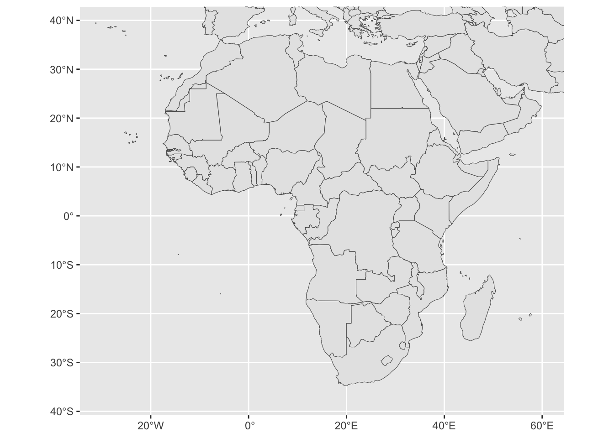
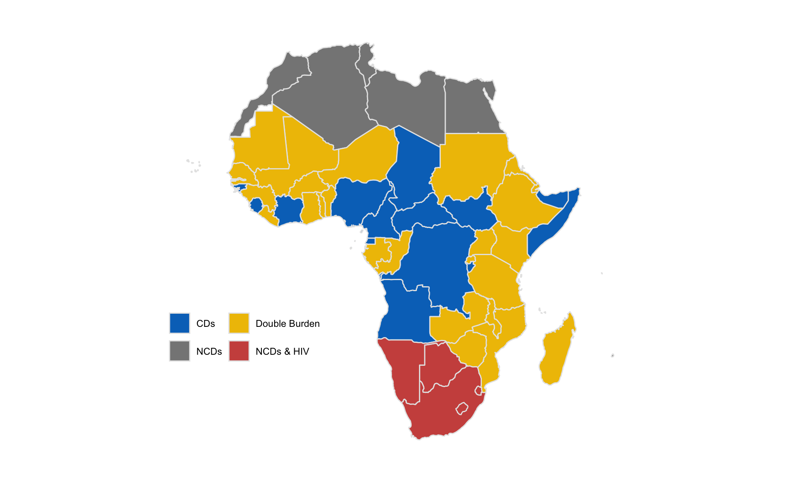
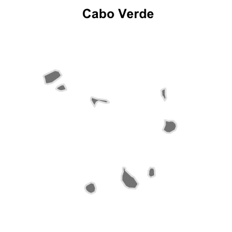
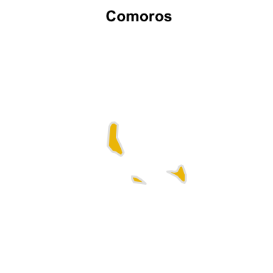
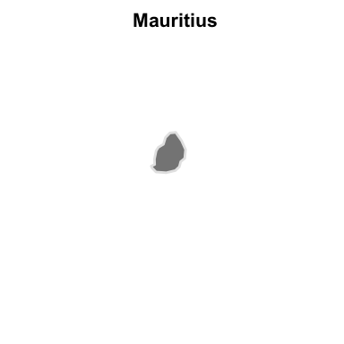
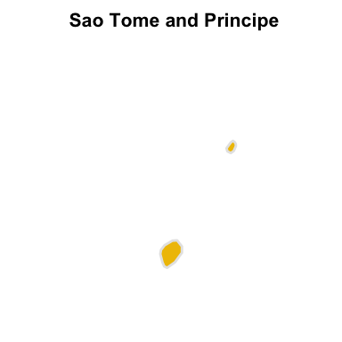
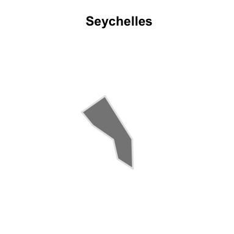
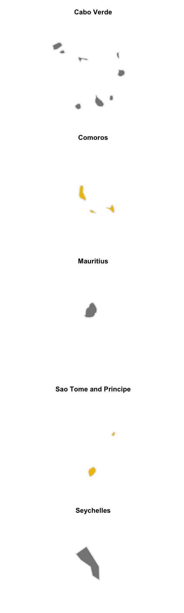
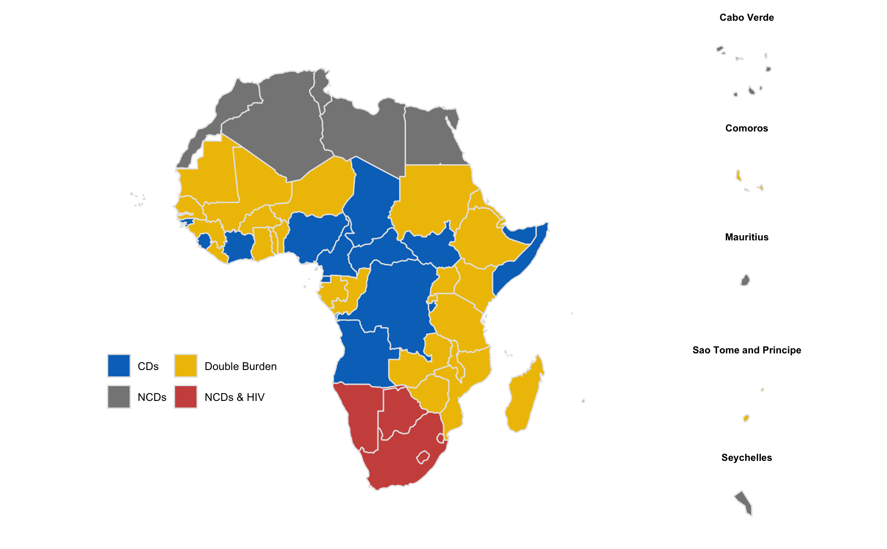

library(tidyverse)
library(sf)
library(maps)
library(ggsci)
library(patchwork)First, I’ll read in the cluster analysis results from Part One.
kmeans_viz_data <- read_csv('.//data/kmeans_viz_data.csv')Get the country polygons from the sf:: package.
world1 <- sf::st_as_sf(map('world', plot = FALSE, fill = TRUE))Plot these polygons using ggplot().
ggplot() +
geom_sf(data = world1) +
coord_sf(xlim = c(-30, 60),
ylim = c(39, -37))
Create custom map themes.
map.theme <- theme(text = element_text(family = "Arial", color = "black"),
panel.background = element_rect(fill = "white"),
plot.background = element_rect(fill = "white"),
#panel.grid = element_blank(),
#panel.border = element_blank(),
plot.title = element_text(size = 25, hjust = 0),
plot.subtitle = element_text(size = 25),
plot.caption = element_text(size = 20),
axis.text = element_blank(),
axis.title = element_blank(),
axis.ticks = element_blank(),
legend.position = "inside",
legend.key.size = unit(.7, "cm"),
legend.direction = "horizontal",
legend.background = element_rect(fill="white"))
map.theme.small <- theme(text = element_text(family = "Arial", color = "black"),
panel.background = element_rect(fill = "white"),
plot.background = element_rect(fill = "white"),
panel.grid = element_blank(),
plot.title = element_text(size = 8, face = 'bold', hjust = 0.5),
plot.subtitle = element_text(size = 8),
axis.text = element_blank(),
axis.title = element_blank(),
axis.ticks = element_blank(),
legend.position = "none",
legend.background = element_rect(fill="white"),
legend.title = element_blank())Mapping
Recode some country names to make sf:: and the cluster results compatible.
map.world <- map_data("world") %>%
mutate(region = recode(region,
"Central African Republic" = "Central AfR",
'Democratic Republic of the Congo' = 'Congo, Democratic Republic of',
'Republic of Congo' = 'Congo, Republic of',
'Equatorial Guinea' = 'Equa Guinea',
'Guinea-Bissau' = 'GuineaBiss',
'Ivory Coast' = "Cote d'Ivoire",
'Sierra Leone' = 'SierraLeo',
'South Sudan' = 'Sudan South'))Cluster maps
joined.world.map <- left_join(x=map.world,
y=kmeans_viz_data,
by=c('region' = 'country'))Using the coordinates from above to focus on Africa, I’ll map the cluster results.
(l_map_clust <- joined.world.map %>%
filter(africa == '1') %>%
ggplot(.) +
geom_polygon(aes(x = long, y = lat, group = group, fill = clust_name), color="gray90") +
geom_polygon(data=. %>% filter(region == 'Western Sahara'),
aes(x = long, y = lat, group = group), fill = "gray90", color="gray90") +
coord_map(xlim = c(-30, 60),
ylim = c(39, -37)) +
labs(fill = '') +
scale_fill_jco() +
map.theme +
guides(fill=guide_legend(nrow=2, byrow=TRUE)) +
theme(legend.position.inside = c(.2, .3)))
I want to plot each of the island nations alongside the continental map, so that you can see their results more clearly. I’ll generate a zoomed in map for each, and then use patchwork:: to bring them all together.
(s_map_1 <- joined.world.map %>%
filter(africa == 1) %>%
ggplot(.) +
geom_polygon(aes(x = long, y = lat, group = group, fill = clust_name), color="gray90") +
scale_fill_jco() +
ggtitle('Cabo Verde') +
coord_map(xlim = c(-25.5, -22.2), ylim = c(14.5, 17.8)) +
map.theme.small)
(s_map_2 <- joined.world.map %>%
filter(africa == 1) %>%
ggplot(.) +
geom_polygon(aes(x = long, y = lat, group = group, fill = clust_name), color="gray90") +
scale_fill_jco() +
ggtitle('Comoros') +
coord_map(xlim = c(42.1, 45.4), ylim = c(-13.4, -10.1)) +
map.theme.small)
(s_map_3 <- joined.world.map %>%
filter(africa == 1) %>%
ggplot(.) +
geom_polygon(aes(x = long, y = lat, group = group, fill = clust_name), color="gray90") +
scale_fill_jco() +
ggtitle('Mauritius') +
coord_map(xlim = c(56, 59.3), ylim = c(-22.3, -19)) +
map.theme.small)
(s_map_4 <- joined.world.map %>%
filter(africa == 1) %>%
ggplot(.) +
geom_polygon(aes(x = long, y = lat, group = group, fill = clust_name), color="gray90") +
scale_fill_jco() +
ggtitle('Sao Tome and Principe') +
coord_map(xlim = c(5, 8.3), ylim = c(-.5, 2.8)) +
map.theme.small)
(s_map_5 <- joined.world.map %>%
filter(africa == 1) %>%
ggplot(.) +
geom_polygon(aes(x = long, y = lat, group = group, fill = clust_name), color="gray90") +
scale_fill_jco() +
ggtitle('Seychelles') +
coord_map(xlim = c(55.2, 55.8), ylim = c(-4.9, -4.4)) +
map.theme.small)
(s_map_plot_grid <- s_map_1 / s_map_2 / s_map_3 / s_map_4 / s_map_5)
Now, the final plot that brings them all together.
(l_map_clust + s_map_plot_grid + plot_layout(widths = c(8, 1, 1)))
These results demonstrate that, while there are some discernible regional patterns in health outcomes, some countries in West, Central, and East Africa do not necessarily look like their neighbors.